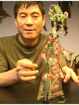
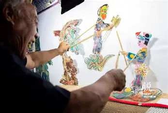
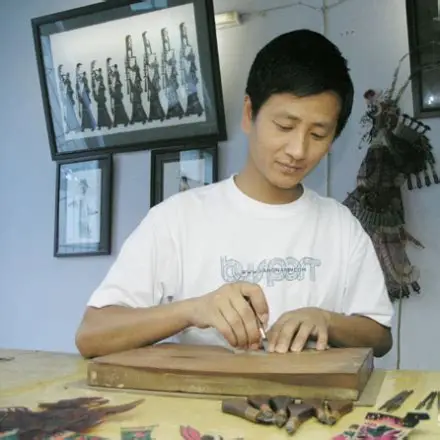
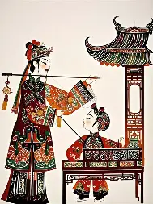
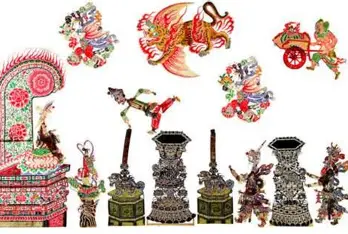
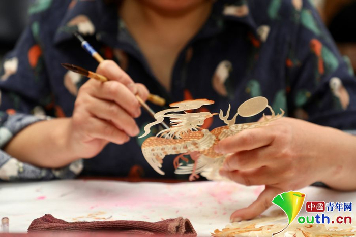

汪天稳
国家级传承人华县皮影雕刻代表人物，自幼随父学艺，精通选皮、雕刻、 着色全套工序。其作品造型生动、刀工细腻，被誉为"中国皮影雕刻第一人"。
代表作品
《白蛇传》影人全套、《西游记》人物群像、大型皮影《百猫图》
致敬幕后匠人 · 守护光影技艺
走近陕西皮影戏杰出代表性传承人
陕西皮影戏国家级、省级代表性传承人

华县皮影雕刻代表人物，自幼随父学艺，精通选皮、雕刻、 着色全套工序。其作品造型生动、刀工细腻，被誉为"中国皮影雕刻第一人"。
《白蛇传》影人全套、《西游记》人物群像、大型皮影《百猫图》

华县皮影戏"十老"之一，擅长演唱与操纵表演。 嗓音洪亮、表演细腻，从艺七十余载，培养了大批青年皮影艺人。
《封神演义》全本演唱、《杨家将》系列、传统折子戏《打金枝》

青年皮影雕刻家，汪天稳弟子。在继承传统技艺基础上融入现代审美， 创办皮影工坊，致力于非遗产业化与研学教育推广。
文创皮影《十二生肖》、《长安十二时辰》主题影人、皮影装饰画系列

阿宫腔皮影戏代表性传承人，集演唱、操纵、雕刻于一身。 长期活跃于关中乡村舞台，为阿宫腔皮影戏的抢救保护作出重要贡献。
《鸿门宴》全本、《周仁回府》、阿宫腔传统剧目《白玉梅》

华县皮影戏表演艺术家，自幼随父学艺，技艺全面。 擅长旦角演唱与影人操纵，嗓音甜美、表演灵动，多次赴海内外展演交流。
《火焰驹》全本、《狸猫换太子》、传统折子戏《打神》

华县皮影雕刻大师，刀法遒劲、线条流畅，在人物造型与 花草纹样雕刻上造诣极深，作品多次入选国家级非遗展览并被机构收藏。
《百猫图》系列、《八仙过海》影人、大型皮影《清明上河图》
陕西皮影戏传承人近年来的代表性成果